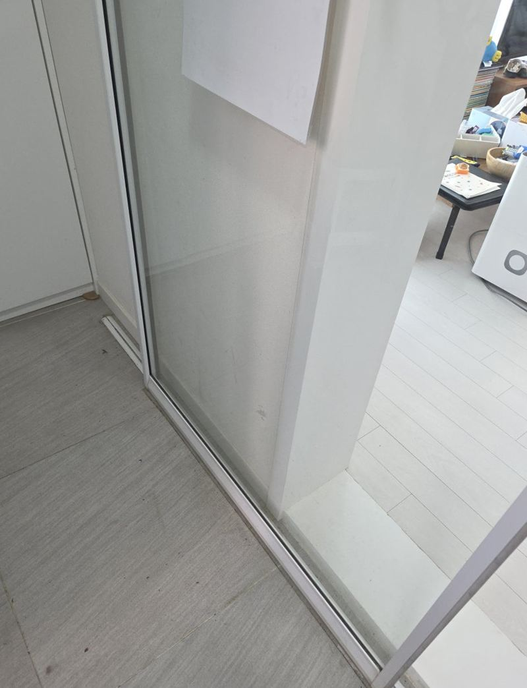
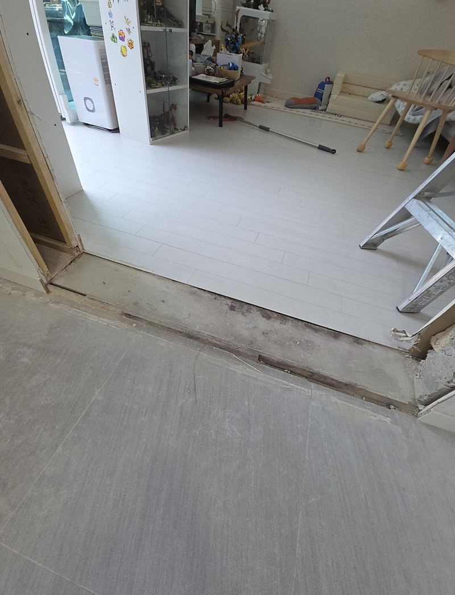
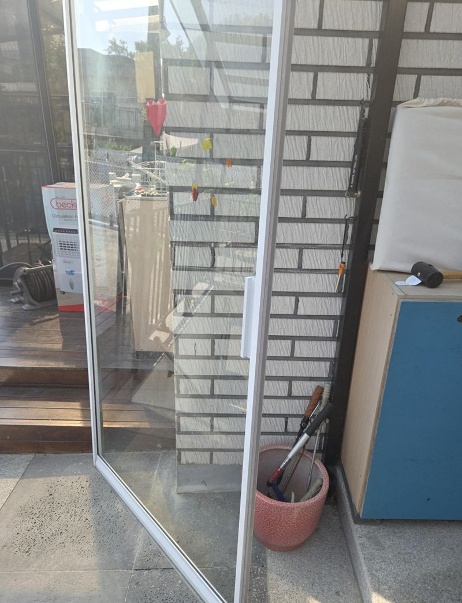
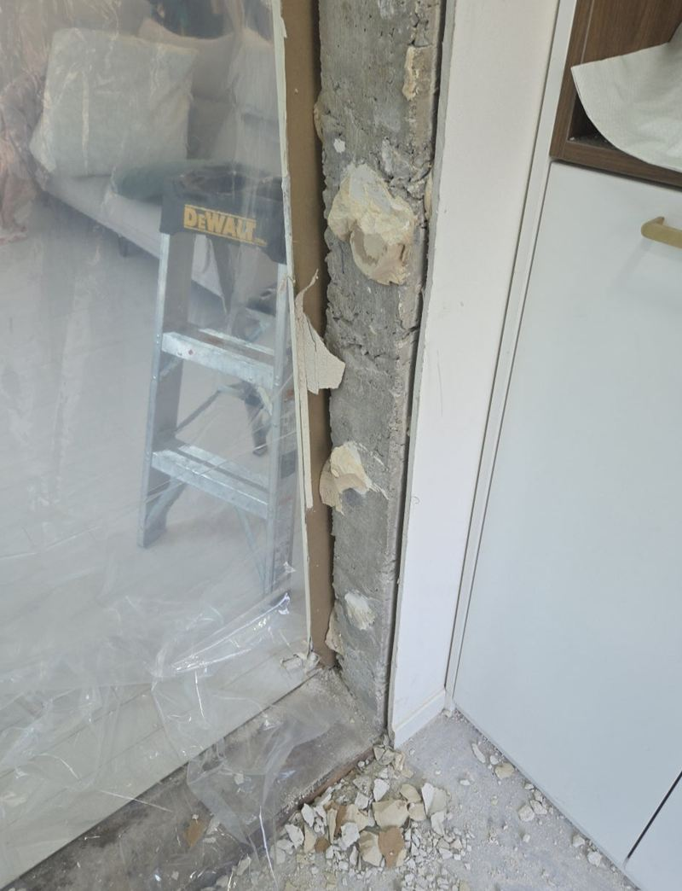
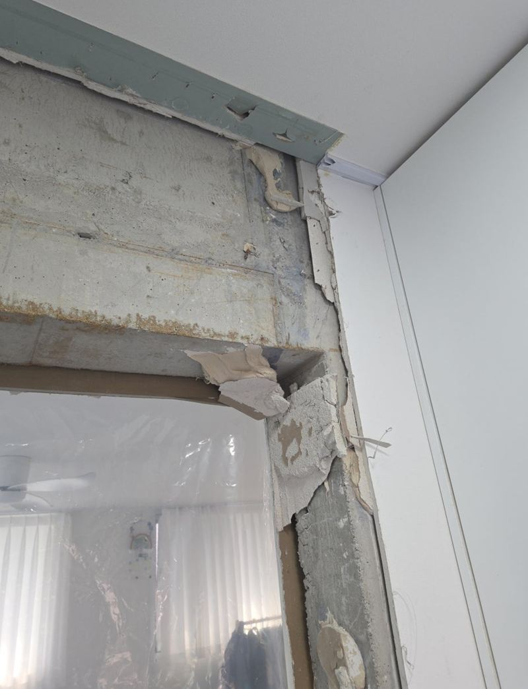
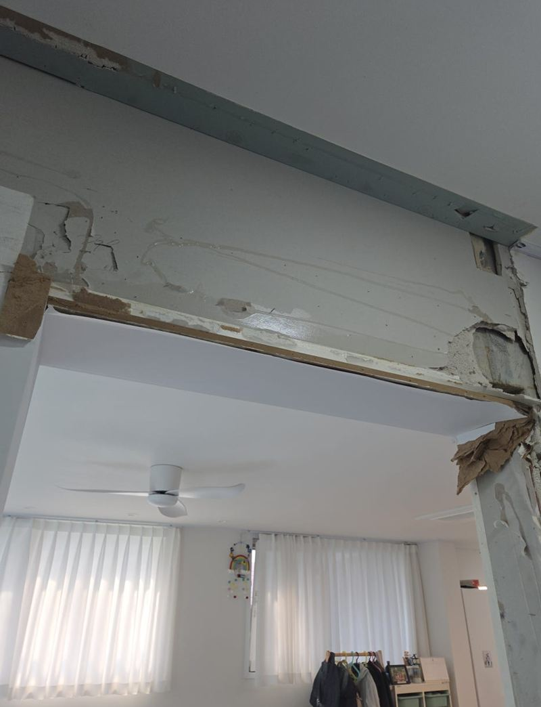

오산 슬라이딩도어 석고벽 철거 비용과 순서
← 밀어서 전후 비교 →
처음엔 현관 디딤석만 새로 하고 싶다는 문의였어요. 오산 집 현관을 같이 둘러보던 중, 고객분이 "중문 폭이 좁아서 늘 답답했는데 넓힐 수도 있을까요?" 하고 물으셨어요. 확인해 보니 옆 벽이 구조벽이 아닌 석고벽이라 넓히는 게 가능했어요. 중문 프레임과 하부 레일을 먼저 분리하고, 석고벽을 절단 위치에 맞춰 하나씩 걷어 낸 뒤 목재 디딤석까지 정리해 다음 공정이 바로 들어올 수 있게 했어요.
| 현장 | 오산 집 현관 슬라이딩 중문 |
|---|---|
| 요청 | 디딤석 교체 + 중문 폭 넓히기 |
| 한 일 | 벽 구조 확인 → 중문 프레임·하부 레일 분리 → 석고벽 계획 절단·철거 → 목재 디딤석 제거 → 잔재 수거·폐기 → 다음 공정 준비 |
| 이어지는 공정 | 대리석 디딤석 등 마감 공사 |
옆 벽까지 철거할 수 있을까
중문을 넓히려면 문만 떼는 게 아니라 옆 벽을 일부 없애야 하는 경우가 많아요. 다만 모든 벽을 철거할 수 있는 건 아니에요. 집의 무게를 받치는 구조벽은 손대면 안 되고, 석고보드로 세운 칸막이 벽이어야 걷어 낼 수 있어요. 천장 쪽 마감과 바닥 경계까지 함께 살펴본 뒤 범위를 정했어요.


- 석고벽인지두드려 보면 소리가 비고, 단면에 석고보드가 보여요.
- 안에 무엇이 지나는지전선이나 스위치가 있으면 옮길 자리를 먼저 정해요.
- 바닥 경계타일과 마루가 만나는 선이라 깨지지 않게 철거 깊이를 조절해요.
중문·석고벽 철거 순서
중문 프레임과 레일 분리
프레임과 하부 레일, 석고벽, 문지방이 서로 물려 있어 순서를 잘못 잡으면 주변 타일과 마루가 다쳐요. 유리문과 프레임부터 떼어 냈어요.

석고벽 계획 절단
힘으로 부수지 않고 미리 정한 선을 따라 잘라 하나씩 걷었어요. 진동을 줄여야 주변 마감이 덜 상하고, 이후 마감선도 반듯하게 나와요.


디딤석 제거
중문을 넓히면 바닥 구조도 바뀌어서 목재 디딤석도 걷었어요. 타일과 마루가 맞닿은 경계는 작은 충격에도 깨져 가장 시간을 많이 들였어요.
정리와 수거
남은 목재, 석고 조각, 유리 파편을 모두 치우고 폐기물도 가져가 처리했어요. 다음 마감 공정이 바로 들어올 수 있는 상태로 마무리했어요.

중문 철거 비용이 달라지는 것
| 항목 | 확인하는 것 |
|---|---|
| 철거 범위 | 문만인지, 옆 석고벽·레일·디딤석까지인지 |
| 문 종류 | 유리 슬라이딩인지, 여닫이인지, 무게가 얼마인지 |
| 벽 속 설비 | 전선·스위치를 옮겨야 하는지 |
| 폐기물 양 | 유리, 석고, 목재가 얼마나 나오는지 |
| 이어지는 마감 | 디딤석·벽 마감을 같이 하는지 |
철거와 마감을 따로 부르면 그 사이 공정이 비어요. 이번처럼 디딤석, 문틀 보수, 대리석 마감까지 함께 계획하면 일정이 훨씬 짧아져요. 고객분은 "중문만 넓히는 줄 알았는데 바닥까지 신경 써 줘서 다음 설치도 믿고 맡기겠다"고 하셨어요.
중문 넓히기 전에 알아 두면 좋은 것
- 새 중문 크기 먼저넓힐 폭에 맞는 새 문을 정해 두면 철거 범위가 명확해져요.
- 신발장 위치옆에 붙은 신발장이 있으면 옮기거나 줄여야 할 수 있어요.
- 먼지 대비석고 가루가 날려 거실 쪽을 덮고 작업해요.
중문·석고벽 철거 질문
철거만 하고 문은 나중에 달아도 되나요?
가능해요. 다만 벽 끝 마감을 어떻게 할지는 철거 때 같이 정해 두는 게 좋아요.
콘크리트 벽도 넓힐 수 있나요?
구조벽은 함부로 자르면 안 돼요. 석고벽이나 조적벽인지 먼저 확인해요.
철거 후 천장에 자국이 남나요?
레일이 붙어 있던 자리는 자국이 남아요. 몰딩이나 도배로 덮는 마감이 필요해요.
유리 중문을 다른 곳에 다시 쓸 수 있나요?
상태가 괜찮으면 조심히 떼어 보관할 수 있어요. 미리 말씀해 주세요.
아파트에서도 소음 작업이 가능한가요?
관리 규정의 작업 시간을 지켜 진행해요. 미리 이웃에 알리시면 좋아요.
디딤석은 무엇으로 바꾸나요?
대리석을 많이 써요. 바닥 높이와 문 하단을 보고 두께를 정해요.
사진만으로 범위를 알 수 있나요?
정면, 바닥, 천장 사진이 있으면 철거 범위를 대략 가늠할 수 있어요.
다른 슬라이딩·붙박이장 현장
중문 정면과 바닥, 위쪽 레일 사진을 보내 주세요.
전화 상담 010-4517-9872